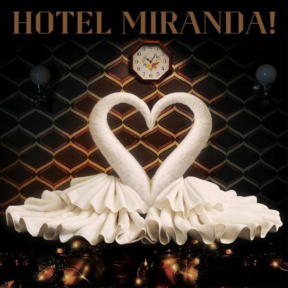

Trayectoria musical
Durante su trayectoria han editado nueve álbumes de estudio y seis álbumes en vivo. Han recibido diversos premios, entre los que se encuentran: Los Premios MTV Latinoamérica, MTV Europe Music Awards, Premios Carlos Gardel, 40 Principales y Premios Konex.
Album más reconocido

- 1- Don (con Ca7riel)
- Yo te diré (con Lali)
- Perfecta (con María Becerra y FMK)
- Traición (con Emmanuel Horvilleur y Juan Ingaramo)
- Uno los dos (con Emilia Mernes)
- Prisionero (con Cristian Castro)
- Enamorada (con Francisca Valenzuela)
- Tu misterioso alguien (con Andrés Calamaro)
- Mentía (con Chano)
- Ya lo sabía (con Sofía Reyes)